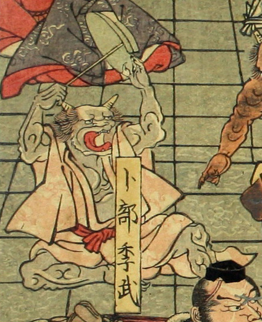

2本の角のある鬼。座って、長い棒を持った右腕と、大きな盃を持った左腕を、高く上げている。肌は浅黒く、薄い赤色の着物を着て、口を大きく開けている。
著作者：一栄斎芳艶（歌川芳艶）／出典：親書誌：U426_nichibunken_0086：丹波國大江山之圖；タンバノクニオオエヤマノズ／日付：2007／資源識別子：U426_nichibunken_0086_0001_0000
Copyright (c)2010- International Research Center for Japanese Studies, Kyoto, Japan. All rights reserved.